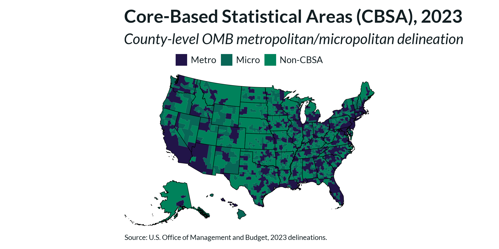
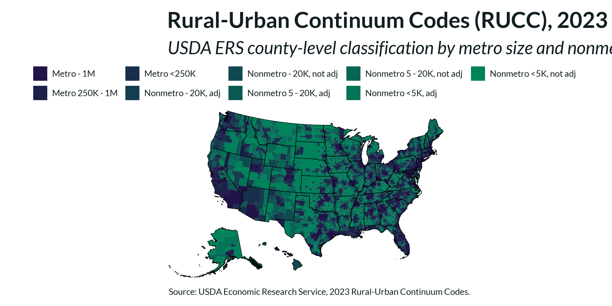
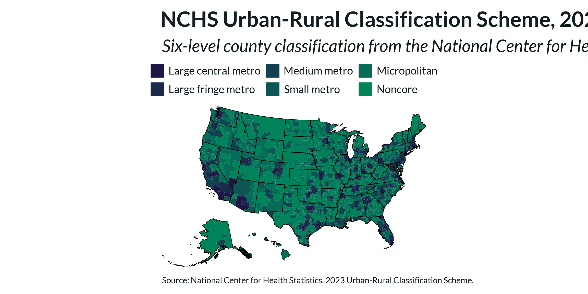
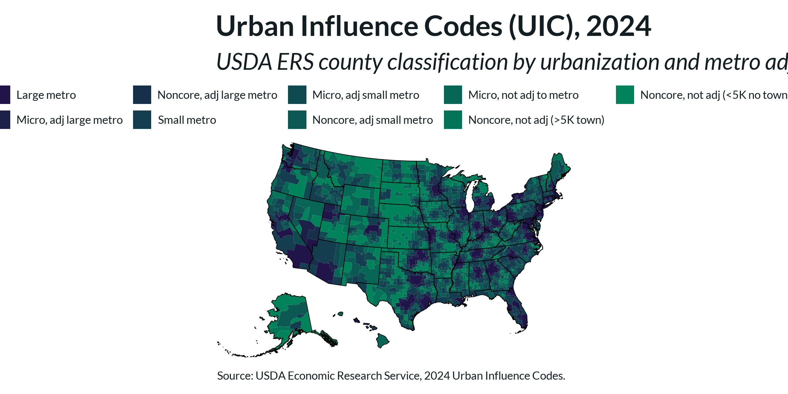
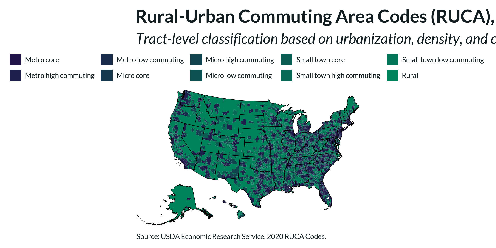
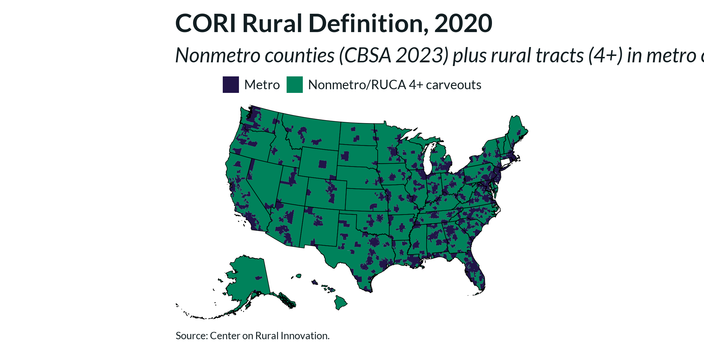

Rural Definitions Maps
rural-definitions-maps.Rmd
library(ruraldefinitions)
library(cori.charts)
library(tidyverse)
library(sf)
library(tigris)
library(here)
load_fonts()
options(tigris_use_cache = TRUE, tigris_progress_bar = FALSE)Parameters
Modify these blocks to change colors and output paths.
export_dir <- here::here("export")
chart_w <- 10
chart_h <- 6
# Brand anchor colors — all palettes are derived from these two
color_rural <- cori_colors[["Emerald"]] # "#00825B"
color_nonrural <- cori_colors[["Dark Purple"]] # "#211448"
# CBSA 2023 (3 classes) -------------------------------------------------------
colors_cbsa <- c(
"Metro" = color_nonrural,
"Micro" = "#086656",
"Non-CBSA" = color_rural
)
# RUCC 2023 (9 codes, 1 = most urban → 9 = most rural) -----------------------
colors_rucc <- setNames(
colorRampPalette(c(color_nonrural, color_rural))(9),
as.character(1:9)
)
# NCHS 2023 (6 codes, 1 = most urban → 6 = most rural) -----------------------
colors_nchs <- setNames(
colorRampPalette(c(color_nonrural, color_rural))(6),
as.character(1:6)
)
# UIC 2024 (9 codes, 1 = most urban → 9 = most rural) ------------------------
colors_uic <- setNames(
colorRampPalette(c(color_nonrural, color_rural))(9),
as.character(1:9)
)
# RUCA 2020 (codes 1–10, 99 = water-only tracts) -----------------------------
colors_ruca <- c(
setNames(colorRampPalette(c(color_nonrural, color_rural))(10), as.character(1:10)),
"99" = "#FFFFFF"
)
# CORI 2020 (3 classes) -------------------------------------------------------
colors_cori <- c(
"Metro" = color_nonrural,
"Nonmetro/RUCA 4+ carveouts" = color_rural
)Load Geometries
County and state boundaries are loaded once and reused across all county-level maps. Tract boundaries are loaded separately for the tract-level maps.
counties_sf <- tigris::counties(cb = TRUE, year = 2023) %>%
tigris::shift_geometry() %>%
filter(GEOID <= "57") %>%
sf::st_transform(crs = 5070)## | | | 0% | | | 1% | |= | 1% | |= | 2% | |== | 2% | |== | 3% | |== | 4% | |=== | 4% | |=== | 5% | |==== | 5% | |==== | 6% | |===== | 6% | |===== | 7% | |===== | 8% | |====== | 8% | |====== | 9% | |======= | 9% | |======= | 10% | |======= | 11% | |======== | 11% | |======== | 12% | |========= | 12% | |========= | 13% | |========= | 14% | |========== | 14% | |========== | 15% | |=========== | 15% | |=========== | 16% | |============ | 17% | |============ | 18% | |============= | 18% | |============= | 19% | |============== | 20% | |============== | 21% | |=============== | 21% | |=============== | 22% | |================ | 23% | |================= | 24% | |================= | 25% | |================== | 25% | |================== | 26% | |=================== | 26% | |=================== | 27% | |=================== | 28% | |==================== | 28% | |==================== | 29% | |===================== | 30% | |===================== | 31% | |====================== | 31% | |====================== | 32% | |======================= | 32% | |======================= | 33% | |======================== | 34% | |======================== | 35% | |========================= | 35% | |========================= | 36% | |========================== | 37% | |========================== | 38% | |=========================== | 39% | |============================ | 40% | |============================= | 41% | |============================= | 42% | |============================== | 43% | |=============================== | 44% | |=============================== | 45% | |================================ | 46% | |================================= | 46% | |================================= | 47% | |================================= | 48% | |================================== | 48% | |================================== | 49% | |=================================== | 49% | |=================================== | 50% | |==================================== | 51% | |==================================== | 52% | |===================================== | 53% | |====================================== | 54% | |======================================= | 55% | |======================================= | 56% | |======================================== | 57% | |======================================== | 58% | |========================================= | 58% | |========================================= | 59% | |========================================== | 60% | |=========================================== | 61% | |============================================ | 62% | |============================================ | 63% | |============================================ | 64% | |============================================= | 64% | |============================================== | 65% | |============================================== | 66% | |=============================================== | 67% | |=============================================== | 68% | |================================================ | 68% | |================================================ | 69% | |================================================= | 70% | |================================================== | 71% | |================================================== | 72% | |=================================================== | 72% | |=================================================== | 73% | |==================================================== | 74% | |==================================================== | 75% | |===================================================== | 76% | |======================================================== | 80% | |========================================================== | 83% | |=========================================================== | 85% | |============================================================= | 88% | |============================================================== | 88% | |======================================================================| 100%
states_sf <- tigris::states(cb = TRUE, year = 2023) %>%
tigris::shift_geometry() %>%
filter(GEOID <= "57") %>%
sf::st_transform(crs = 5070)## | | | 0% | |= | 2% | |===== | 8% | |======= | 10% | |========= | 13% | |============ | 17% | |============= | 18% | |============== | 20% | |=============== | 22% | |================= | 24% | |==================================== | 51% | |======================================== | 56% | |========================================= | 58% | |========================================== | 61% | |=========================================== | 62% | |============================================ | 63% | |============================================= | 65% | |============================================== | 66% | |================================================ | 68% | |================================================== | 71% | |=================================================== | 73% | |======================================================== | 81% | |================================================================ | 92% | |===================================================================== | 98% | |======================================================================| 100%
bbox <- sf::st_bbox(states_sf)
state_fips <- tigris::fips_codes %>%
distinct(state_code) %>%
filter(state_code <= "56") %>%
pull(state_code)
tracts_sf <- map_dfr(
state_fips,
~tigris::tracts(state = .x, cb = TRUE, year = 2020, progress_bar = FALSE)
) %>%
tigris::shift_geometry() %>%
sf::st_transform(crs = 5070)Maps
CBSA 2023
Core-Based Statistical Areas (OMB). Three classes: Metro, Micro, and Non-CBSA (nonmetro).
map_cbsa <- counties_sf %>%
left_join(cbsa_2023, by = c("GEOID" = "geoid")) %>%
mutate(rural_def = factor(rural_def, levels = names(colors_cbsa))) %>%
group_by(rural_def) %>%
summarise(geometry = sf::st_union(geometry), .groups = "drop")
fig_cbsa <- ggplot() +
geom_sf(data = map_cbsa, aes(fill = rural_def), color = NA, linewidth = 0) +
geom_sf(data = states_sf, fill = NA, color = "black", linewidth = 0.3) +
scale_fill_manual(name = NULL, values = colors_cbsa, na.value = "#ffffff") +
coord_sf(
crs = sf::st_crs(5070),
xlim = c(bbox["xmin"], bbox["xmax"]),
ylim = c(bbox["ymin"], bbox["ymax"]),
expand = FALSE
) +
labs(
title = "Core-Based Statistical Areas (CBSA), 2023",
subtitle = "County-level OMB metropolitan/micropolitan delineation",
caption = "Source: U.S. Office of Management and Budget, 2023 delineations."
) +
theme_cori_map() +
theme(
legend.position = "top",
legend.direction = "horizontal",
legend.key.width = unit(20, "pt"),
legend.key.height = unit(20, "pt"),
legend.spacing.x = unit(8, "pt"),
legend.text = element_text(size = 10),
plot.caption = element_text(size = 8, hjust = 0, lineheight = 1.2)
)
dir.create(export_dir, showWarnings = FALSE, recursive = TRUE)
save_plot(fig_cbsa, file.path(export_dir, "map_cbsa_2023.png"),
chart_height = chart_h, chart_width = chart_w)
save_plot(fig_cbsa, file.path(export_dir, "map_cbsa_2023.svg"),
chart_height = chart_h, chart_width = chart_w, add_logo = FALSE)
fig_cbsa
RUCC 2023
USDA Rural-Urban Continuum Codes. Nine codes distinguishing metro counties by population size and nonmetro counties by degree of urbanization and adjacency to a metro area.
# Short labels keyed by numeric code
rucc_labels <- c(
"1" = "Metro - 1M",
"2" = "Metro 250K - 1M",
"3" = "Metro <250K",
"4" = "Nonmetro - 20K, adj",
"5" = "Nonmetro - 20K, not adj",
"6" = "Nonmetro 5 - 20K, adj",
"7" = "Nonmetro 5 - 20K, not adj",
"8" = "Nonmetro <5K, adj",
"9" = "Nonmetro <5K, not adj"
)
map_rucc <- counties_sf %>%
left_join(rucc_2023, by = c("GEOID" = "geoid")) %>%
mutate(
code = str_extract(rural_def, "^\\d+"),
label = factor(rucc_labels[code], levels = rucc_labels)
) %>%
group_by(label) %>%
summarise(geometry = sf::st_union(geometry), .groups = "drop")
colors_rucc_labeled <- setNames(colors_rucc, rucc_labels)
fig_rucc <- ggplot() +
geom_sf(data = map_rucc, aes(fill = label), color = NA, linewidth = 0) +
geom_sf(data = states_sf, fill = NA, color = "black", linewidth = 0.3) +
scale_fill_manual(name = NULL, values = colors_rucc_labeled, na.value = "#ffffff") +
coord_sf(
crs = sf::st_crs(5070),
xlim = c(bbox["xmin"], bbox["xmax"]),
ylim = c(bbox["ymin"], bbox["ymax"]),
expand = FALSE
) +
labs(
title = "Rural-Urban Continuum Codes (RUCC), 2023",
subtitle = "USDA ERS county-level classification by metro size and nonmetro urbanization",
caption = "Source: USDA Economic Research Service, 2023 Rural-Urban Continuum Codes."
) +
theme_cori_map() +
theme(
legend.position = "top",
legend.direction = "horizontal",
legend.key.width = unit(20, "pt"),
legend.key.height = unit(20, "pt"),
legend.spacing.x = unit(6, "pt"),
legend.text = element_text(size = 8),
plot.caption = element_text(size = 8, hjust = 0, lineheight = 1.2)
)
save_plot(fig_rucc, file.path(export_dir, "map_rucc_2023.png"),
chart_height = chart_h, chart_width = chart_w)
save_plot(fig_rucc, file.path(export_dir, "map_rucc_2023.svg"),
chart_height = chart_h, chart_width = chart_w, add_logo = FALSE)
fig_rucc
NCHS 2023
National Center for Health Statistics Urban-Rural Classification Scheme. Six levels subdividing OMB metro areas by size and distinguishing two nonmetro classes (micropolitan and noncore).
nchs_labels <- c(
"1" = "Large central metro",
"2" = "Large fringe metro",
"3" = "Medium metro",
"4" = "Small metro",
"5" = "Micropolitan",
"6" = "Noncore"
)
map_nchs <- counties_sf %>%
left_join(nchs_2023, by = c("GEOID" = "geoid")) %>%
mutate(
code = str_extract(rural_def, "^\\d+"),
label = factor(nchs_labels[code], levels = nchs_labels)
) %>%
group_by(label) %>%
summarise(geometry = sf::st_union(geometry), .groups = "drop")
colors_nchs_labeled <- setNames(colors_nchs, nchs_labels)
fig_nchs <- ggplot() +
geom_sf(data = map_nchs, aes(fill = label), color = NA, linewidth = 0) +
geom_sf(data = states_sf, fill = NA, color = "black", linewidth = 0.3) +
scale_fill_manual(name = NULL, values = colors_nchs_labeled, na.value = "#ffffff") +
coord_sf(
crs = sf::st_crs(5070),
xlim = c(bbox["xmin"], bbox["xmax"]),
ylim = c(bbox["ymin"], bbox["ymax"]),
expand = FALSE
) +
labs(
title = "NCHS Urban-Rural Classification Scheme, 2023",
subtitle = "Six-level county classification from the National Center for Health Statistics",
caption = "Source: National Center for Health Statistics, 2023 Urban-Rural Classification Scheme."
) +
theme_cori_map() +
theme(
legend.position = "top",
legend.direction = "horizontal",
legend.key.width = unit(20, "pt"),
legend.key.height = unit(20, "pt"),
legend.spacing.x = unit(8, "pt"),
legend.text = element_text(size = 10),
plot.caption = element_text(size = 8, hjust = 0, lineheight = 1.2)
)
save_plot(fig_nchs, file.path(export_dir, "map_nchs_2023.png"),
chart_height = chart_h, chart_width = chart_w)
save_plot(fig_nchs, file.path(export_dir, "map_nchs_2023.svg"),
chart_height = chart_h, chart_width = chart_w, add_logo = FALSE)
fig_nchs
UIC 2024
USDA Urban Influence Codes. Nine codes classifying counties by population, degree of urbanization, and adjacency to metro areas.
uic_labels <- c(
"1" = "Large metro",
"2" = "Micro, adj large metro",
"3" = "Noncore, adj large metro",
"4" = "Small metro",
"5" = "Micro, adj small metro",
"6" = "Noncore, adj small metro",
"7" = "Micro, not adj to metro",
"8" = "Noncore, not adj (>5K town)",
"9" = "Noncore, not adj (<5K no town)"
)
map_uic <- counties_sf %>%
left_join(uic_2024, by = c("GEOID" = "geoid")) %>%
mutate(
code = str_extract(rural_def, "^\\d+"),
label = factor(uic_labels[code], levels = uic_labels)
) %>%
group_by(label) %>%
summarise(geometry = sf::st_union(geometry), .groups = "drop")
colors_uic_labeled <- setNames(colors_uic, uic_labels)
fig_uic <- ggplot() +
geom_sf(data = map_uic, aes(fill = label), color = NA, linewidth = 0) +
geom_sf(data = states_sf, fill = NA, color = "black", linewidth = 0.3) +
scale_fill_manual(name = NULL, values = colors_uic_labeled, na.value = "#ffffff") +
coord_sf(
crs = sf::st_crs(5070),
xlim = c(bbox["xmin"], bbox["xmax"]),
ylim = c(bbox["ymin"], bbox["ymax"]),
expand = FALSE
) +
labs(
title = "Urban Influence Codes (UIC), 2024",
subtitle = "USDA ERS county classification by urbanization and metro adjacency",
caption = "Source: USDA Economic Research Service, 2024 Urban Influence Codes."
) +
theme_cori_map() +
theme(
legend.position = "top",
legend.direction = "horizontal",
legend.key.width = unit(20, "pt"),
legend.key.height = unit(20, "pt"),
legend.spacing.x = unit(6, "pt"),
legend.text = element_text(size = 8),
plot.caption = element_text(size = 8, hjust = 0, lineheight = 1.2)
)
save_plot(fig_uic, file.path(export_dir, "map_uic_2024.png"),
chart_height = chart_h, chart_width = chart_w)
save_plot(fig_uic, file.path(export_dir, "map_uic_2024.svg"),
chart_height = chart_h, chart_width = chart_w, add_logo = FALSE)
fig_uic
RUCA 2020
USDA Rural-Urban Commuting Area Codes. Ten tract-level codes based on urbanization, population density, and commuting patterns. Code 99 indicates water-only tracts.
ruca_labels <- c(
"1" = "Metro core",
"2" = "Metro high commuting",
"3" = "Metro low commuting",
"4" = "Micro core",
"5" = "Micro high commuting",
"6" = "Micro low commuting",
"7" = "Small town core",
"8" = "Small town high commuting",
"9" = "Small town low commuting",
"10" = "Rural",
"99" = "Water only"
)
ruca_raw <- get_definition("ruca", 2020)
map_ruca <- tracts_sf %>%
left_join(ruca_raw, by = c("GEOID" = "geoid")) %>%
mutate(
code = str_extract(rural_def, "^\\d+"),
label = factor(ruca_labels[code], levels = ruca_labels)
) %>%
filter(code != "99", !is.na(code)) %>%
group_by(label) %>%
summarise(geometry = sf::st_union(geometry), .groups = "drop")
colors_ruca_labeled <- setNames(colors_ruca, ruca_labels)
fig_ruca <- ggplot() +
geom_sf(data = map_ruca, aes(fill = label), color = NA, linewidth = 0) +
geom_sf(data = states_sf, fill = NA, color = "black", linewidth = 0.3) +
scale_fill_manual(name = NULL, values = colors_ruca_labeled, na.value = "#ffffff") +
coord_sf(
crs = sf::st_crs(5070),
xlim = c(bbox["xmin"], bbox["xmax"]),
ylim = c(bbox["ymin"], bbox["ymax"]),
expand = FALSE
) +
labs(
title = "Rural-Urban Commuting Area Codes (RUCA), 2020",
subtitle = "Tract-level classification based on urbanization, density, and commuting flows",
caption = "Source: USDA Economic Research Service, 2020 RUCA Codes."
) +
theme_cori_map() +
theme(
legend.position = "top",
legend.direction = "horizontal",
legend.key.width = unit(20, "pt"),
legend.key.height = unit(20, "pt"),
legend.spacing.x = unit(6, "pt"),
legend.text = element_text(size = 8),
plot.caption = element_text(size = 8, hjust = 0, lineheight = 1.2)
)
save_plot(fig_ruca, file.path(export_dir, "map_ruca_2020.png"),
chart_height = chart_h, chart_width = chart_w)
save_plot(fig_ruca, file.path(export_dir, "map_ruca_2020.svg"),
chart_height = chart_h, chart_width = chart_w, add_logo = FALSE)
fig_ruca
CORI 2020
CORI’s hybrid definition combining nonmetropolitan counties (CBSA 2023) with rural tracts in metropolitan counties (RUCA 2020 codes 4+).
cori_raw <- get_definition("cori", 2020)
map_cori <- tracts_sf %>%
left_join(cori_raw, by = c("GEOID" = "geoid")) %>%
filter(!is.na(rural_def)) %>%
mutate(
display = case_when(
rural_def == "Metro county" ~ "Metro",
rural_def %in% c("Nonmetro county",
"Rural tract in metro county") ~ "Nonmetro/RUCA 4+ carveouts"
),
display = factor(display, levels = names(colors_cori))
) %>%
group_by(display) %>%
summarise(geometry = sf::st_union(geometry), .groups = "drop")
fig_cori <- ggplot() +
geom_sf(data = map_cori, aes(fill = display), color = NA, linewidth = 0) +
geom_sf(data = states_sf, fill = NA, color = "black", linewidth = 0.3) +
scale_fill_manual(name = NULL, values = colors_cori, na.value = "#ffffff") +
coord_sf(
crs = sf::st_crs(5070),
xlim = c(bbox["xmin"], bbox["xmax"]),
ylim = c(bbox["ymin"], bbox["ymax"]),
expand = FALSE
) +
labs(
title = "CORI Rural Definition, 2020",
subtitle = "Nonmetro counties (CBSA 2023) plus rural tracts (4+) in metro counties (RUCA 2020)",
caption = "Source: Center on Rural Innovation."
) +
theme_cori_map() +
theme(
legend.position = "top",
legend.direction = "horizontal",
legend.key.width = unit(20, "pt"),
legend.key.height = unit(20, "pt"),
legend.spacing.x = unit(8, "pt"),
legend.text = element_text(size = 10),
plot.caption = element_text(size = 8, hjust = 0, lineheight = 1.2)
)
save_plot(fig_cori, file.path(export_dir, "map_cori_2020.png"),
chart_height = chart_h, chart_width = chart_w)
save_plot(fig_cori, file.path(export_dir, "map_cori_2020.svg"),
chart_height = chart_h, chart_width = chart_w, add_logo = FALSE)
fig_cori